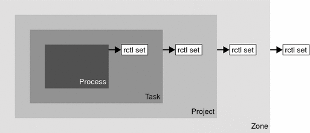

Previous
Previous
Resource Control Enforcement
More than one resource control can exist on a resource. A resource control can exist at each containment level in the process model. If resource controls are active on the same resource at different container levels, the smallest container's control is enforced first. Thus, action is taken on process.max-cpu-time before task.max-cpu-time if both controls are encountered simultaneously.
Figure 6-1 Process Collectives, Container Relationships, and Their Resource Control SetsGlobal Monitoring of Resource Control Events
Often, the resource consumption of processes is unknown. To get more information, try using the global resource control actions that are available with the rctladm command. Use rctladm to establish a syslog action on a resource control. Then, if any entity managed by that resource control encounters a threshold value, a system message is logged at the configured logging level. See Chapter 7, Administering Resource Controls (Tasks) and the rctladm(1M) man page for more information.
Applying Resource Controls
Each resource control listed in Table 6-1 can be assigned to a project at login or when newtask, su, or the other project-aware launchers at, batch, or cron are invoked. Each command that is initiated is launched in a separate task with the invoking user's default project. See the man pages login(1), newtask(1), at(1), cron(1M), and su(1M) for more information.
Updates to entries in the project database, whether to the /etc/project file or to a representation of the database in a network name service, are not applied to currently active projects. The updates are applied when a new task joins the project through login or newtask.
Temporarily Updating Resource Control Values on a Running System
Values changed in the project database only become effective for new tasks that are started in a project. However, you can use the rctladm and prctl commands to update resource controls on a running system.
Updating Logging Status
The rctladm command affects the global logging state of each resource control on a system-wide basis. This command can be used to view the global state and to set up the level of syslog logging when controls are exceeded.
Updating Resource Controls
You can view and temporarily alter resource control values and actions on a per-process, per-task, or per-project basis by using the prctl command. A project, task, or process ID is given as input, and the command operates on the resource control at the level where the control is defined.
Any modifications to values and actions take effect immediately. However, these modifications apply to the current process, task, or project only. The changes are not recorded in the project database. If the system is restarted, the modifications are lost. Permanent changes to resource controls must be made in the project database.
All resource control settings that can be modified in the project database can also be modified with the prctl command. Both basic and privileged values can be added or be deleted. Their actions can also be modified. By default, the basic type is assumed for all set operations, but processes and users with superuser privileges can also modify privileged resource controls. System resource controls cannot be altered.
Commands Used With Resource Controls
The commands that are used with resource controls are shown in the following table.
Command Reference | Description |
|---|---|
ipcs(1) | Allows you to observe which IPC objects are contributing to a project's usage |
prctl(1) | Allows you to make runtime interrogations of and modifications to the resource controls facility, with local scope |
rctladm(1M) | Allows you to make runtime interrogations of and modifications to the resource controls facility, with global scope |
The resource_controls(5) man page describes resource controls available through the project database, including units and scaling factors.